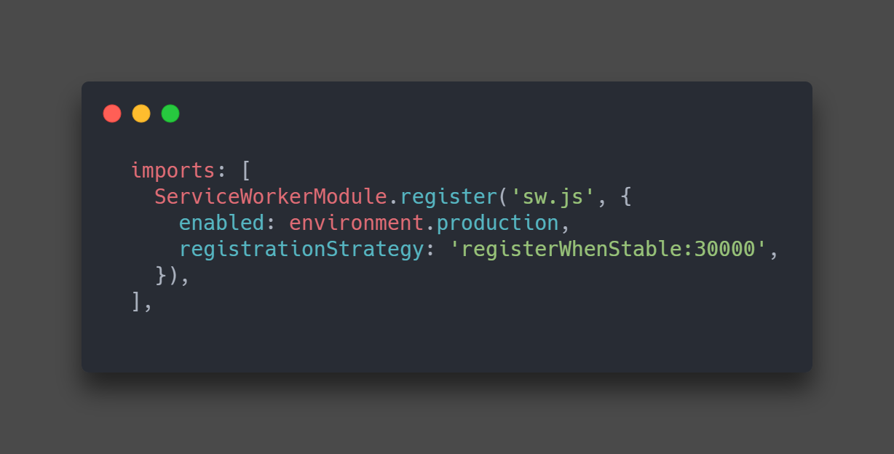

برای این کار مراحل زیر را دنبال میکنیم :
ابتدا 2 فایل با نام ها sw-rwg.js و sw.js میسازیم
هر دو فایل را در index.html در تگ script وارد میکنیم
در فایل sw-reg.js به کمک کد زیر sw.js را معرفی میکنیم
به کمک دستورات زیر قابلیت سرویس ورکر را در انگولار فعال میکنیم :
در فایل app.module.ts فایل sw.js را جایگزین میکنیم ( مانند شکل زیر )
و در آخر برای این که قابلیت های PWA خود انگولار را داشته باشیم در ابتدای فایل sw.js این ایمپورت را مینویسیم
importScripts("ngsw-worker.js");